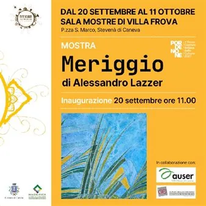

da dom 20 set a dom 11 ott
Meriggio - Mostra di Alessandro Lazzer
𝗗𝗮𝗹 𝟮𝟬 𝘀𝗲𝘁𝘁𝗲𝗺𝗯𝗿𝗲 𝗮𝗹 𝟭𝟭 𝗼𝘁𝘁𝗼𝗯𝗿𝗲 2026 𝗦𝗮𝗹𝗮 𝗠𝗼𝘀𝘁𝗿𝗲 𝗱𝗶 𝗩𝗶𝗹𝗹𝗮 𝗙𝗿𝗼𝘃𝗮, Stevenà di Caneva (PN) La mostra presenta opere immerse in una natura quieta e sospesa, tra paesaggi mediterranei e borghi silenziosi. Colore e materia si fondono in un equilibrio delicato, avvolti da una luce senza…
 Indicazioni
Indicazioni
- Costi e prenotazioni
- Costo non indicato · Prenotazione non indicata
- Programma
- Programma da verificare. Apri la fonte ufficiale per orari e possibili aggiornamenti.
- In caso di maltempo
- Nessuna indicazione specifica pubblicata.
- Note
- Acquisito automaticamente dalla fonte.
L’EVENTO
Descrizione completa
La mostra presenta opere immerse in una natura quieta e sospesa, tra paesaggi mediterranei e borghi silenziosi. Colore e materia si fondono in un equilibrio delicato, avvolti da una luce senza tempo.
Vi aspettiamo all'𝗶𝗻𝗮𝘂𝗴𝘂𝗿𝗮𝘇𝗶𝗼𝗻𝗲 𝗱𝗼𝗺𝗲𝗻𝗶𝗰𝗮 𝟮𝟬 𝘀𝗲𝘁𝘁𝗲𝗺𝗯𝗿𝗲 𝗼𝗿𝗲 𝟭𝟭.𝟬𝟬
Presentazione e intervento critico Dott.ssa 𝗚𝗶𝗼𝘃𝗮𝗻𝗻𝗮 𝗜𝗮𝗰𝘂𝗺𝗶𝗻
𝑆𝑎𝑏𝑎𝑡𝑜 26 𝑠𝑒𝑡𝑡𝑒𝑚𝑏𝑟𝑒 𝑙𝑎 𝑏𝑖𝑏𝑙𝑖𝑜𝑡𝑒𝑐𝑎 𝑟𝑖𝑚𝑎𝑟𝑟𝑎̀ 𝑐ℎ𝑖𝑢𝑠𝑎 𝑙𝑎 𝑚𝑎𝑡𝑡𝑖𝑛𝑎
Descrizione 𝗗𝗮𝗹 𝟮𝟬 𝘀𝗲𝘁𝘁𝗲𝗺𝗯𝗿𝗲 𝗮𝗹 𝟭𝟭 𝗼𝘁𝘁𝗼𝗯𝗿𝗲 2026 𝗦𝗮𝗹𝗮 𝗠𝗼𝘀𝘁𝗿𝗲 𝗱𝗶 𝗩𝗶𝗹𝗹𝗮 𝗙𝗿𝗼𝘃𝗮, Stevenà di Caneva (PN) La mostra presenta opere immerse in una natura quieta e sospesa, tra paesaggi mediterranei e borghi silenziosi. Colore e materia si fondono in un equilibrio delicato, avvolti da una luce senza tempo. Vi aspettiamo all'𝗶𝗻𝗮𝘂𝗴𝘂𝗿𝗮𝘇𝗶𝗼𝗻𝗲 𝗱𝗼𝗺𝗲𝗻𝗶𝗰𝗮 𝟮𝟬 𝘀𝗲𝘁𝘁𝗲𝗺𝗯𝗿𝗲 𝗼𝗿𝗲 𝟭𝟭.𝟬𝟬 Presentazione e intervento critico Dott.ssa 𝗚𝗶𝗼𝘃𝗮𝗻𝗻𝗮 𝗜𝗮𝗰𝘂𝗺𝗶𝗻 Allestimento curato da Giovanna Carlot La mostra sarà visitabile in questi orari: - Lunedì - Venerdì: 15:00 - 18:30 - Sabato: 9.00 – 13.00 e 15:00 - 18:30 - Domenica: 15:00 - 18:00 𝑆𝑎𝑏𝑎𝑡𝑜 26 𝑠𝑒𝑡𝑡𝑒𝑚𝑏𝑟𝑒 𝑙𝑎 𝑏𝑖𝑏𝑙𝑖𝑜𝑡𝑒𝑐𝑎 𝑟𝑖𝑚𝑎𝑟𝑟𝑎̀ 𝑐ℎ𝑖𝑢𝑠𝑎 𝑙𝑎 𝑚𝑎𝑡𝑡𝑖𝑛𝑎 Per maggiori informazioni il sito: https://shorturl.at/hsZ0n
IL PROGRAMMA
Programma e orari
Appuntamenti raccolti dalle fonti elencate. Dove manca un orario, non è ancora disponibile in questa scheda.
Programma pubblicato
- Dal 2026-09-20 al 2026-10-11
INFORMAZIONI UTILI
Prima di partire
- Controllare la fonte prima di partire.
ORGANIZZAZIONE